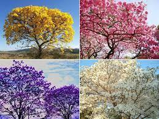

ONZE-HORAS
A menina dos nossos olhos, Onze-horas (Portulaca grandiflora) é uma planta da família Portulacaceae, nativa da América do Sul, ocorrendo desde o sudeste brasileiro até o Uruguai e a Argentina. Temos sementes de várias cores.

MANACÁ-DA-SERRA
O manacá-da-serra (Tibouchina mutabilis) é uma árvore pioneira da Mata Atlântica brasileira, muito característica da encosta úmida da Serra do Mar e da floresta ombrófila densa da encosta atlântica dos estados do Paraná, Rio de Janeiro, Santa Catarina e São Paulo. Temos sementes e mudas.

IPÊ
A típica árvore de Ipê é a denominação de uma grande variedade de espécies do gênero Tabebuia e Handroanthus, sinônimos e ambos da família Bignoniaceae. É muito conhecido por sua beleza, exuberância das flores e ampla distribuição em todas as regiões do Brasil. Os ipês são caducifólias, ou seja, perdem todas as folhas que são substituídas por cachos de flores de cores intensas. São árvores de grande porte que gostam de calor e sol pleno. Temos sementes e mudas de várias cores.